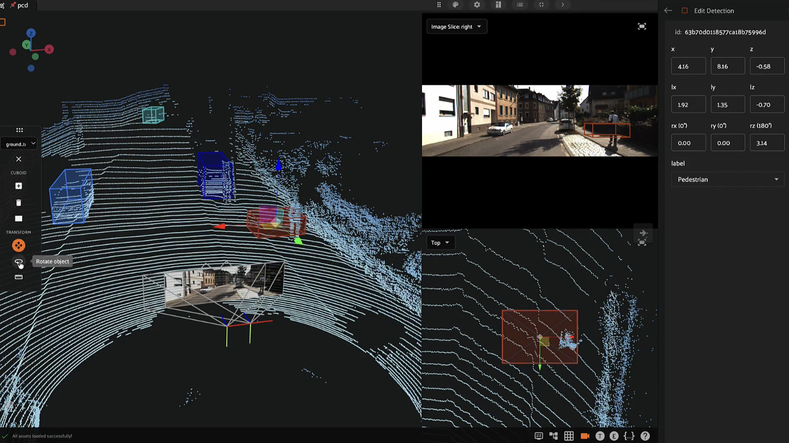
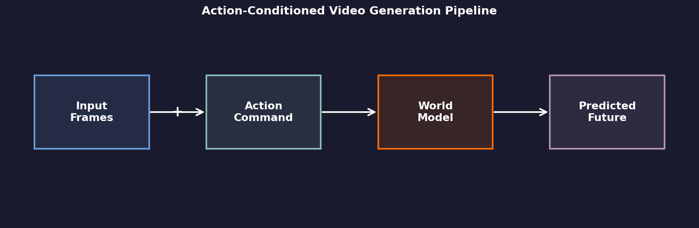
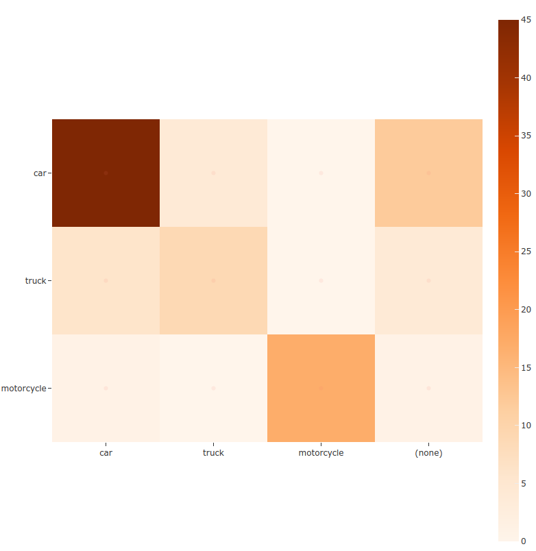
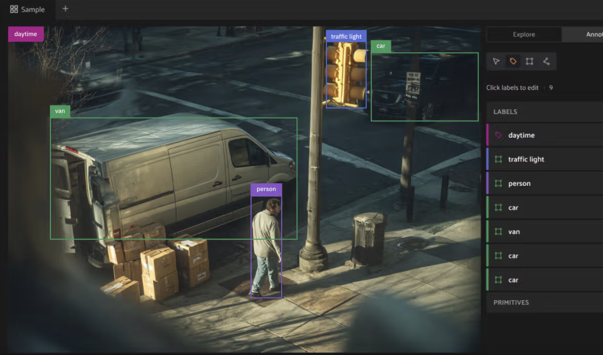
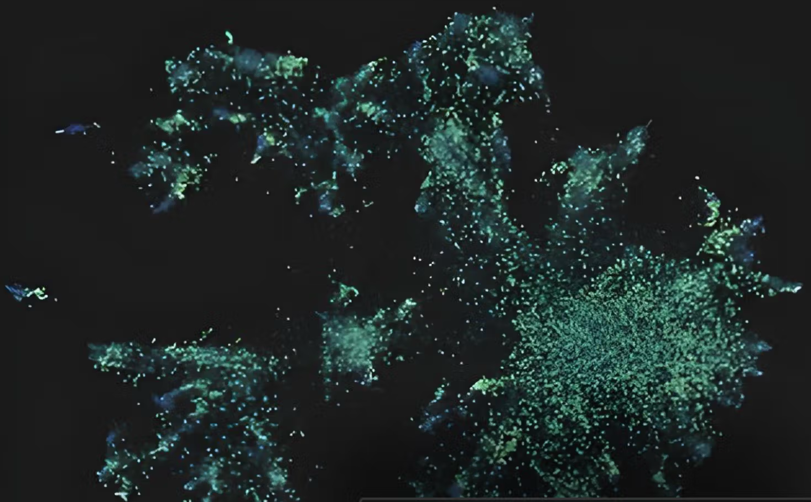
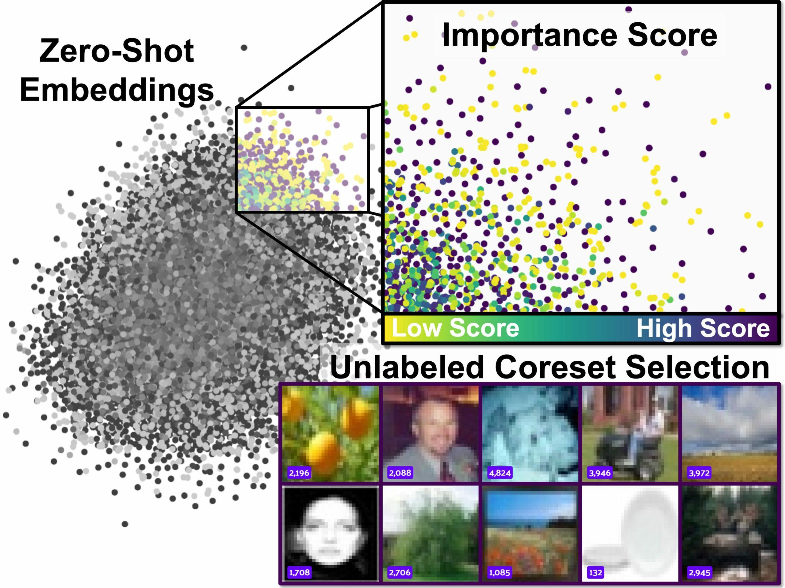
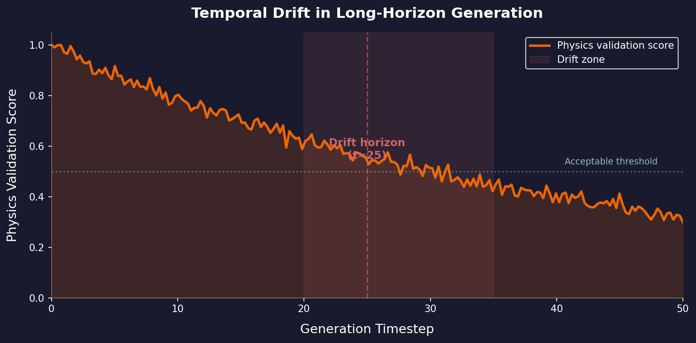

Debugging
the Future
How do you debug a model that imagines the future?

Agenda
- The Landscape: World models & the validation crisis
- Taming the Data Monster: Query, curate, and visualize at scale
- Validating World Models: Beyond FID — physics, drift, pipelines
- Curating for Causality: Rare events, causal annotation, fine-tuning
- Collaborative Red-Teaming: Adversarial probes for world models
- Q&A + resources
The world model moment
The Landscape$3B+
20M hrs
World models predict future video frames given actions. The use cases — AV sim, robotics, content — are real. The money is real.
The problem: looking right and being right are different things. That gap is where validation lives.
What are action-conditioned video models?
The Landscape
The action input makes this harder than vanilla video gen. "Turn left" has to actually turn left, and the physics have to follow.
The validation crisis
The LandscapeWhat we can measure today
- FID / FVD — distributional similarity
- LPIPS — perceptual distance
- CLIP score — semantic alignment
These tell us the look is right. They say nothing about whether physics is right.

A car that floats through a wall scores fine on FID. On PhyGenBench, the best model scores 0.51 — halfway to perfect across 27 physical laws. (Meng et al., 2024)
The scale problem
Taming the Data Monster108
1:10K
~1/106 mi
You can't validate what you can't find. Step one is navigating massive video corpora to surface the scenarios that actually matter.
Query without transfer
Taming the Data Monster| Approach | Trade-off |
|---|---|
| Download locally | Weeks, PB storage |
| Cloud-native query | Query in place, stream slices |
| Embedding index | Semantic search, no pixels |
import fiftyone as fo
from fiftyone import ViewField as F
dataset = fo.load_dataset("av-fleet-2025")
view = (dataset
.match(F("weather") == "rain")
.filter_labels("detections",
F("label") == "pedestrian")
.limit(1000))
session = fo.launch_app(view)
Visualizing billion-scale video
Taming the Data Monster

Embed once, explore forever. Similar content clusters together — including similar failures. Lasso a cluster, find a bug category.
Demo 1: Embedding-Guided
Failure Triage
Load video outputs, compute embeddings, find failure clusters
without watching a single video.
demos/demo1_embedding_triage.ipynb | ~5 min
Beyond FID: what metrics miss
Validating World ModelsWhat appearance metrics measure
- Texture quality & sharpness
- Color distribution fidelity
- Semantic layout similarity
Answers: "does it look real?"
What we actually need
- Object permanence — things don't vanish
- Gravity & collisions — physics works
- Action fidelity — "turn left" turns left
- Temporal coherence — objects track frame to frame
Answers: "does it work right?"
WorldScore: best video model 62.2 vs. 3D models ~72 (Duan et al., ICCV 2025)
Detecting physics hallucinations
Validating World ModelsDetection strategies
- Object tracking consistency: Run a tracker on generated video — do detections match across frames?
- Depth estimation checks: Monocular depth on generated frames — do orderings stay consistent?
- Collision geometry: Extract 3D bounding boxes — do objects overlap impossibly?
- Motion magnitude: Optical flow between frames — do velocities exceed physical limits?
Temporal drift in long-horizon generation
Validating World ModelsMeasuring drift
- Most models limited to ~5s before errors compound (Henschel et al., CVPR '25)
- Genie 2: 10–20s consistent, up to 1 min (DeepMind, Dec '24)
- Identify the drift horizon — where does grounding fail?

Building a validation pipeline
Validating World Modelsimport fiftyone as fo
# Load generated + ground-truth video pairs
dataset = fo.Dataset.from_dir(dataset_dir, dataset_type=fo.types.VideoDirectory)
# Run automated physics checks (your custom functions)
for sample in dataset:
sample["physics_score"] = run_physics_validation(sample.filepath) # your impl
sample["drift_horizon"] = compute_drift_horizon(sample.filepath) # your impl
sample.save()
# Surface worst failures for human review
failures = dataset.sort_by("physics_score").limit(100)
session = fo.launch_app(failures)Physics violations in frontier models
Validating World Models| Violation | Example |
|---|---|
| Newton's Laws | Object accelerates without force |
| Mass Conservation | Object appears / disappears mid-scene |
| Penetration | Car passes through wall or vehicle |
| Gravity | Unsupported object floats in air |
| Fluid Dynamics | Water flows uphill or freezes wrong |
WorldModelBench (Li et al., 2025): 14 frontier models, 350 prompts, 67K human labels. I2V models score lower on physics adherence than T2V counterparts.
Demo 2: Temporal Forensics
VLM-powered video audit — detect what happens, when it starts,
when it stops. Find disagreements automatically.
demos/demo2_temporal_forensics.ipynb | ~5 min
The rare-event problem
Curating for Causality1 in 106 mi
Why this matters
- Models hallucinate on what they haven't seen enough of
- Rare events are where safety-critical failures live
- Random sampling won't find them
- Targeted curation is the only way
Finding action-reaction scenarios
Curating for CausalityPattern mining
- Define causal templates: action → consequence
- Search by temporal co-occurrence of events
- Cluster by embedding similarity to known causal pairs
Programmatic search
# Find braking events followed by
# near-miss within 2 seconds
from fiftyone import ViewField as F
causal = dataset.match(
(F("action_label") == "hard_brake") &
(F("consequence_label") == "near_miss") &
(F("delta_t") < 2.0)
)Annotating causal relationships
Curating for CausalityWhat to annotate
- Trigger event: what action initiated the chain?
- Affected objects: which entities respond?
- Temporal span: when does the effect begin and end?
- Counterfactual: what would happen without the action?
Schema enforcement
- Predefined causal categories (not free text)
- Temporal bounds must be within clip duration
- Every trigger must link to at least one consequence
- Cross-annotator agreement checks built in
Fine-tuning with targeted causal data
Curating for Causality| Targeted Approach | Metric | Baseline | Improved |
|---|---|---|---|
| First-frame conditioning | FID / FVD | 25.0 / 105.1 | 11.2 / 55.7 |
| Camera-conditioned post-training | Pose estimation | 4.4% | 62.6% |
| Physics-aware fine-tuning | Phys. commonsense | 32.3% | 40.1% |
DriveDreamer-2: first-frame + structured scenario conditioning (Zhao et al., AAAI 2025) | Cosmos: camera-conditioned post-training (NVIDIA, 2025) | VideoREPA: physics-aware loss (NeurIPS 2025)
Why red-team world models?
Collaborative Red-Teaming0.51
Why bother?
- Automated metrics miss half the physics failures
- Red-teaming finds the unknown unknowns
- Domain experts catch what FID/FVD never will
- Shared review builds shared understanding
Enterprise red-teaming workflows
Collaborative Red-TeamingRoles
- Scenario designers: craft adversarial inputs
- Domain reviewers: assess physical plausibility
- ML engineers: triage and prioritize fixes
Tooling
- Shared workspace, not siloed notebooks
- Tag and comment on specific frames
- Version failure sets per model checkpoint
Red-teaming in practice
Collaborative Red-Teaming| Physics Probe | Example | Avg Fail | Range (14 models) |
|---|---|---|---|
| Mass conservation | Object appears / disappears | 43% | 12–75% |
| Object penetration | Car passes through wall | 24% | 8–40% |
| Newton's Laws | Accelerates without force | 10% | 6–16% |
| Gravity | Unsupported object floats | 6% | 2–10% |
| Fluid dynamics | Water flows uphill | 4% | 1–8% |
Failure rates = 1 − per-category adherence score from WorldModelBench: 14 frontier models, 67K human labels (Li et al., 2025). Mass conservation is the #1 failure — objects routinely vanish mid-scene.
Key takeaways
- FID/FVD aren't enough. You need physics-aware validation.
- Don't watch 10B frames. Embed, query, filter.
- Drift kills you slowly. Measure it across the generation horizon.
- Rare events are highest-leverage. Targeted curation beats more random data.
- Metrics miss things. People don't. Red-team your world models.
Q&A
Thank you!
Slides & Resources
github.com/nicklotz/world-model-validation
FiftyOne Docs
docs.voxel51.com